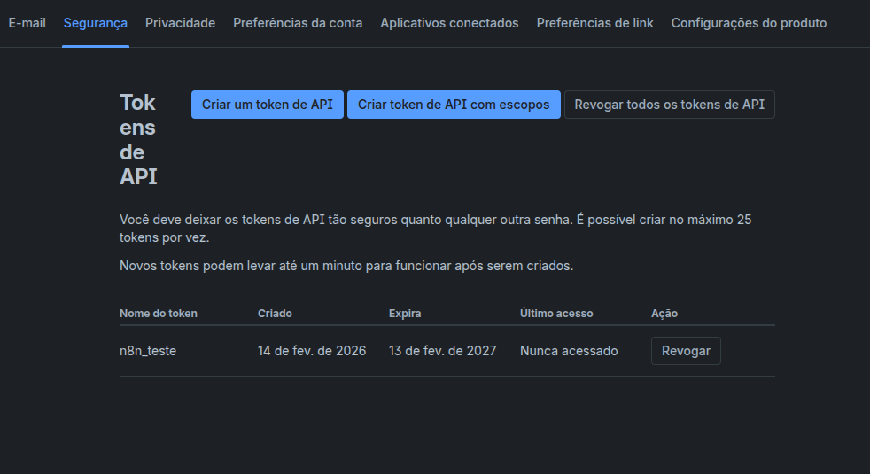
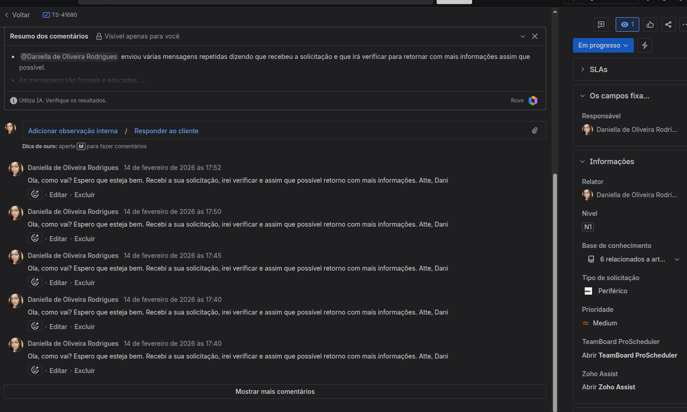

1. Conectividade e Segurança
Para o n8n interagir com o Jira, é necessário estabelecer uma ponte segura via Token de API.
1.1 Geração do Token no Jira
Acesse o portal de segurança da Atlassian e crie um novo token.

1.2 Configuração de Credentials no n8n
No n8n, utilize o e-mail da conta e o token gerado para validar a conexão Jira SW Cloud account 2.

2. Configuração do Workflow (Passo a Passo)
O fluxo foi desenhado para evitar a duplicidade de respostas através de uma trava lógica na descrição do chamado.
2.1 Trigger: Monitoramento Contínuo
O nó Schedule Trigger aciona o robô a cada 5 minutos.

2.2 Filtro: Busca Avançada (JQL)
O nó Get many issues filtra apenas chamados relevantes e sem o "carimbo" de resposta.
status = "Em Progresso" AND assignee = currentUser() AND (description !~ "comentado_por_dani" OR description is EMPTY)

2.3 Ação: Resposta Automática
O nó Add a comment envia a mensagem oficial ao cliente.
- Issue Key:
{{ $json.key }} (mapeamento dinâmico).
- Mensagem: "Ola, como vai? Espero que esteja bem...".

2.4 Trava: Atualização do Chamado
O nó Update an issue insere o carimbo técnico na descrição.
Expressão utilizada para não apagar o texto original:
{{ $json.fields.description }} - comentado_por_dani

3. Ativação e Monitoramento
Após validar o fluxo com o botão Execute Workflow, é mandatório publicar a versão final.
3.1 Status de Publicação
Certifique-se de que o botão no canto superior direito exibe Published.

3.2 Verificação no Jira
O chamado deve apresentar o comentário e a descrição atualizada.